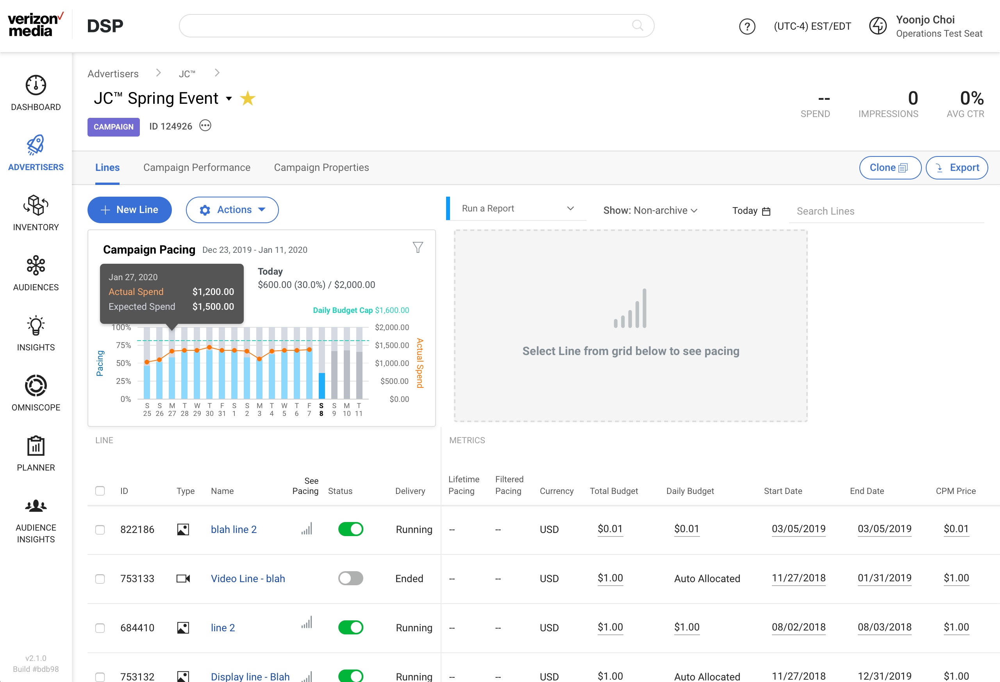
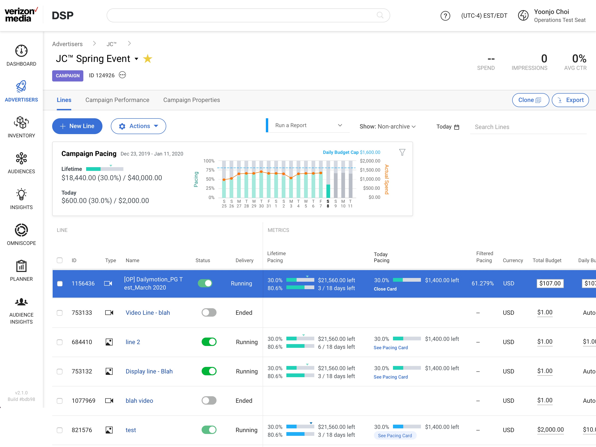
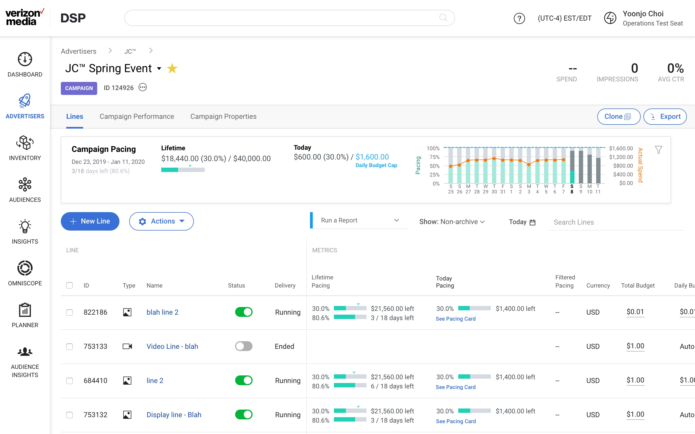
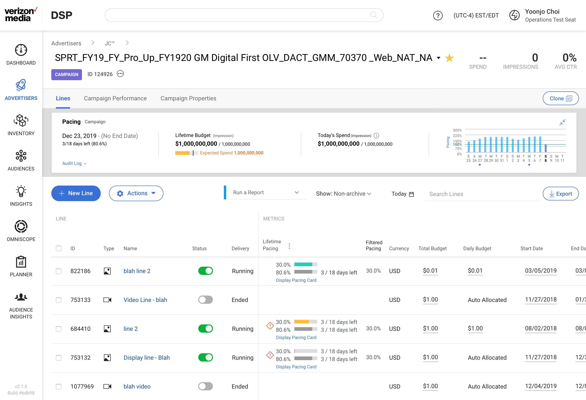
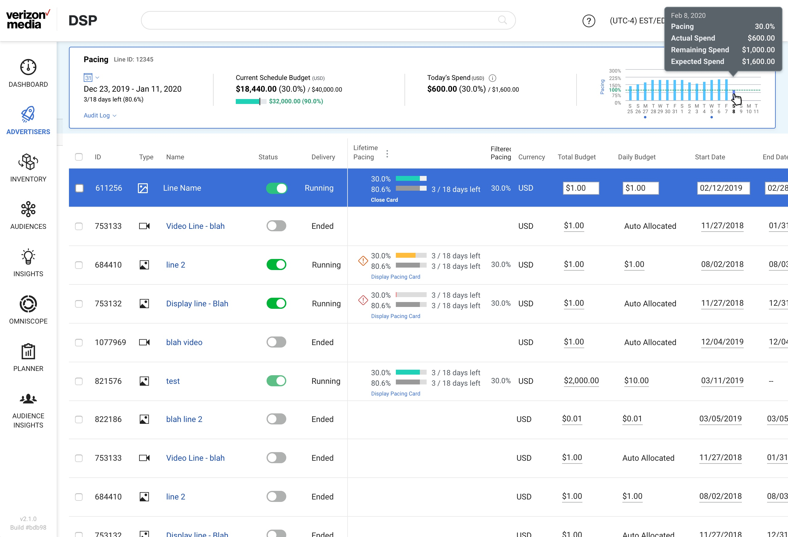
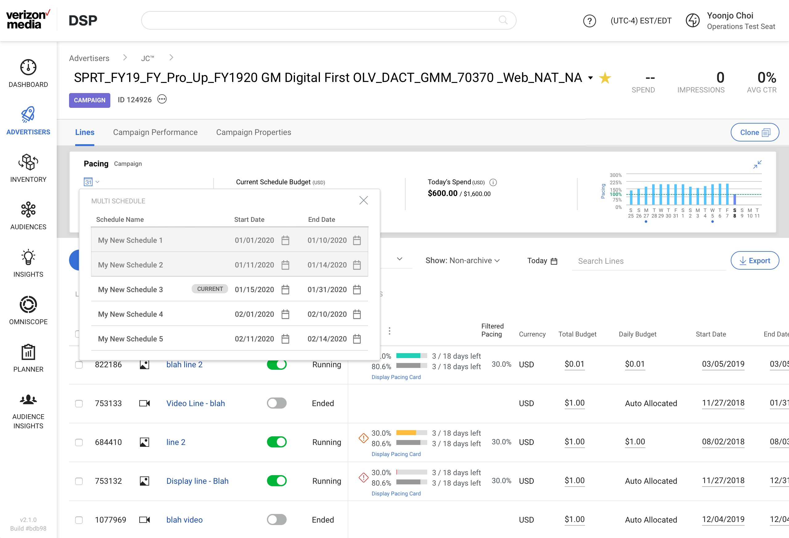
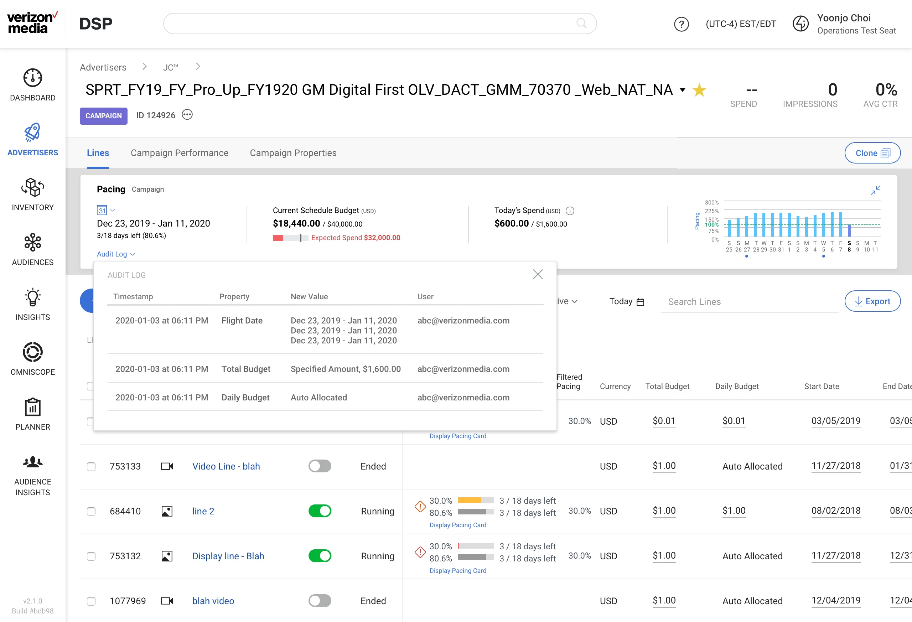
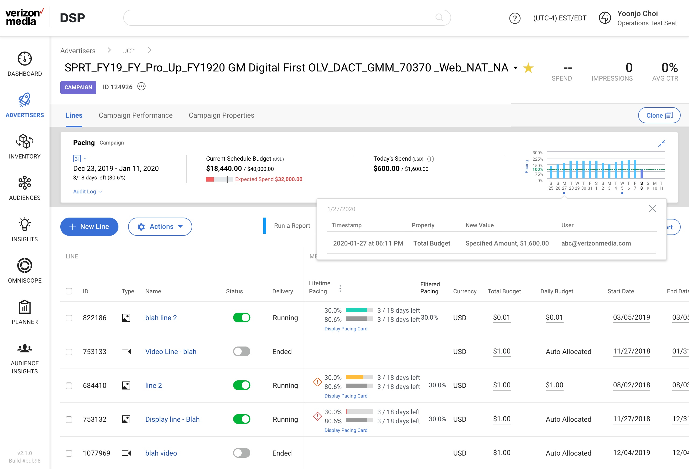

Ad Platforms Demand Side Platform
Pacing
2020
Product Designers: Yoonjo Choi
Tools: Sketch, Invision
Background
One of the most common tasks our users take for mid-flight campaigns is monitoring the spend of the budget and making sure the rate of spend is pacing properly.
Problem Space
Main pain point was the lack of visualizations. Visual call outs were needed for at-a-glance daily health checks. Lack of visualized pacing information had resulted in series of low Ad Sat (internal satisfaction report) scores.
Users
Use Case 1
"Help me see the lines at risk so I can address the issue ASAP."
Use Case 2
"Help me see how my Lines are pacing in conjunction to the parent Campaign pacing, so I can have a quick understanding of how my Campaign is pacing as a whole."
Areas of Focus & User Flow
- What does the pacing visual look like?
- Where should we position the Pacing information on the page?
- How do we provide both, parent and child level pacing information?
Early Layout Explorations
Pacing Card height variations
Variation 1

Variation 2

Variation 3

User Testing
Report 3/2020
- Overall positive. Proposed design meets user needs and expectations around pacing.
- "That's exactly what I was talking about, having that snapshot right up at the top." — Manager at OMD Agency
- "This is amazing. So we have our daily budgets. And at the bottom when we're looking at line per line, we do see the percentage of the flight. So the flight's advancement and as well as the budget pacing. So, that is exactly what we need" — Senior Analyst at XPETO

Final Production
Use Case 1
"Help me see the lines at risk so I can address the issue ASAP."
Use Case 2
"Help me see how my Lines are pacing in conjunction to the parent Campaign pacing, so I can have a quick understanding of how my Campaign is pacing as a whole."
Display Line Pacing Card

Change Card Date Range

Audit Log


Results
- Adoption rate since GA launch (Data Range: Nov 1, 2020 – Nov 30, 2020)
- External: 10% of Page Visitors generated Unique Visitor Clicks
- Internal: 16% of Page Visitors generated Unique Visitor Clicks
- User Quotes
- "I love it, everything is more visible.. Everything is in one place. Makes it so much easier for me."— Agency Trader (Oct, 12, 2020)
- "Seeing as the current client campaign has spent about $160k in 10 days, I'm seeing this as a great success and it will have definitely helped improve the stickiness of the DSP."— Platform Solutions Snr Manager (Oct, 12, 2020)
- Won Best Buy as New Business; Pacing designs were part of roadmap shared with client